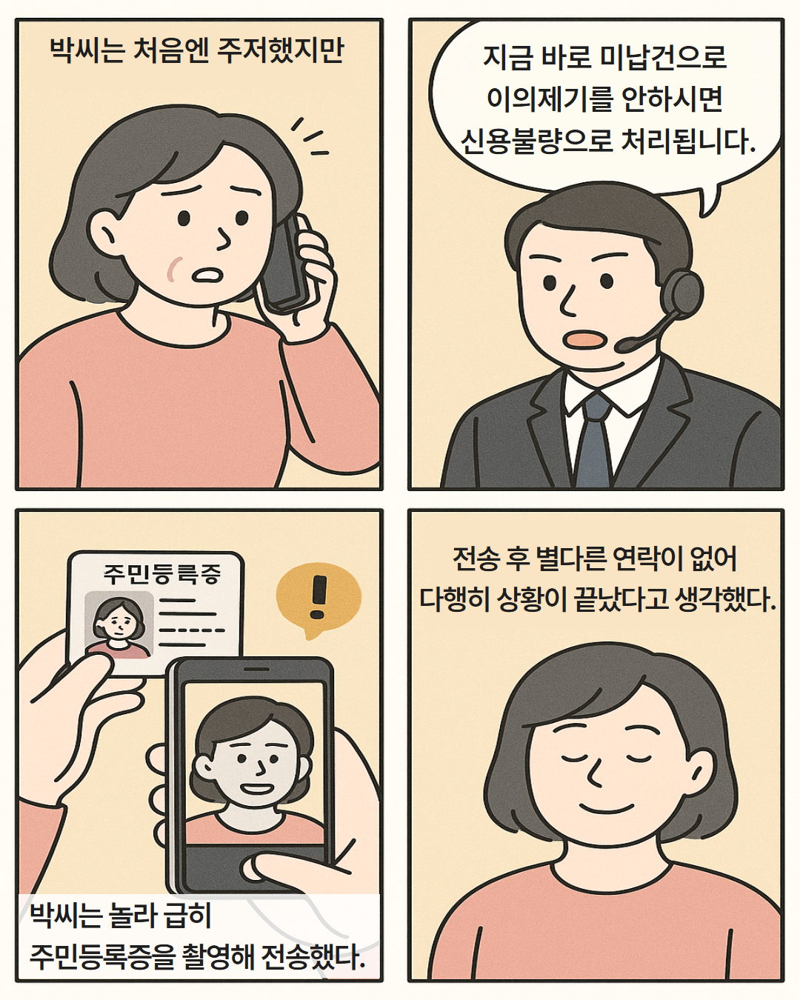

당신의 선택은?
조금 의심되지만 공공기관이라 믿고 전송
이상한 전화라 여겨 직접 확인
피해가 발생하였습니다.
다음

다음
결과 확인하기
다음
📌 개인정보 도용 피해 시 이렇게 대처하세요
📞 피해를 알아챘다면, 바로 금융기관이나 통신사에 연락해 이상 거래를 막아주세요.
📬 개인정보가 도용된 것 같다면 전문기관에 상담을 요청하세요.
✅ 한국인터넷진흥원 명의도용 신고 118 ✅ 금융감독원 금융사기 피해 신고 1332
🔎 혹시 누군가 내 이름으로 계좌나 휴대폰을 만들지 않았는지 확인해보세요.
✅ 내정보지키미 (방송통신위원회) ✅ 금융소비자정보포털 파인(금융감독원) ✅ 개인정보노출확인 (KISA)
🔐 통신사나 금융사에 요청하면 내 이름으로 새로 계좌나 휴대폰을 못 만들게 막을 수 있어요.
📝 피해가 계속된다면 주민등록번호 변경도 신청할 수 있어요. 동사무소에서 안내해드립니다.
📸 사기 증거(전화번호, 문자 내용, 녹취)는 꼭 모아두세요. 경찰서나 사이버수사대에 신고할 수 있습니다.
처음으로 돌아가기
👏 잘 대응하셨어요! 정확한 판단으로 피해를 막으셨습니다.
다음